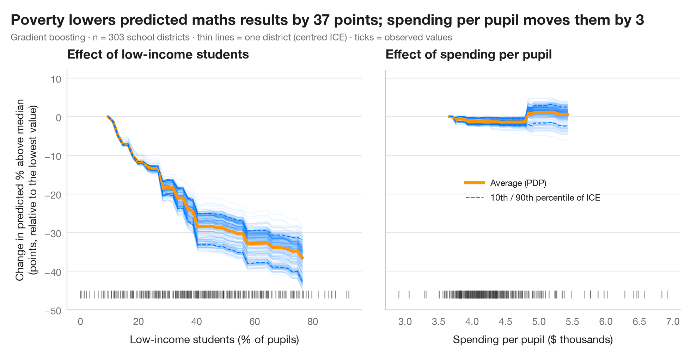

Partial dependence with ICE curves
How predicted maths results change with poverty and with spending per pupil — the average (PDP) over one curve per school district (ICE).

A partial dependence plot (PDP) shows how the model's prediction changes, on average, as one feature varies while all others keep their observed values. Behind the average sit the individual conditional expectation (ICE) curves — one per observation. Parallel ICE curves mean the effect is the same for everyone; curves that fan out or cross reveal interactions that the average hides. ICE curves are centred at the left edge so that their shapes, not their levels, can be compared; the rug marks where the data actually are, since the model extrapolates elsewhere.
Data are the 303 California school districts of the 1998 STAR test bundled
with statsmodels (sm.datasets.star98); the outcome is the share of
students scoring above the national median in maths, predicted from ten
district characteristics. The two panels contrast the share of low-income
students, along which predictions fall steeply, with spending per pupil,
along which they barely move. The model is a gradient-boosting regressor, and
the curves come from sklearn.inspection.partial_dependence(kind="both"). A
PDP describes the model, not the world: it is causal only if the model is.
import matplotlib.pyplot as plt
import numpy as np
import statsmodels.api as sm
from sklearn.ensemble import GradientBoostingRegressor
from sklearn.inspection import partial_dependence
# Data: 303 California school districts; outcome = % of students above the national median in maths
d = sm.datasets.star98.load_pandas().data
y = 100 * d["NABOVE"] / (d["NABOVE"] + d["NBELOW"])
names = {"LOWINC": "% low-income students", "PERASIAN": "% Asian students", "PERBLACK": "% Black students",
"PERHISP": "% Hispanic students", "AVYRSEXP": "Teacher experience (years)",
"AVSALK": "Teacher salary ($000)", "PERSPENK": "Spending per pupil ($000)",
"PTRATIO": "Pupils per teacher", "PCTAF": "% in college-prep courses",
"PCTYRRND": "% year-round schools"}
X = d[list(names)]
model = GradientBoostingRegressor(learning_rate=0.05, n_estimators=300, max_depth=2,
subsample=0.8, random_state=0).fit(X, y)
features = {"LOWINC": "Low-income students (% of pupils)", "PERSPENK": "Spending per pupil ($ thousands)"}
change = {}
plt.rcParams["figure.constrained_layout.use"] = False # manual margins leave room for the subtitle
fig, axes = plt.subplots(1, 2, figsize=(10, 5), sharey=True)
fig.subplots_adjust(left=0.10, right=0.97, top=0.80, bottom=0.12, wspace=0.08)
for ax, (f, label) in zip(axes, features.items()):
pd_res = partial_dependence(model, X, [f], kind="both", grid_resolution=40)
grid = pd_res["grid_values"][0]
ice = pd_res["individual"][0]
ice_c = ice - ice[:, [0]] # centred ICE
pdp_c = pd_res["average"][0] - pd_res["average"][0][0]
change[f] = np.ptp(pdp_c) # range of the average effect
ax.plot(grid, ice_c.T, color="#007AFF", alpha=0.07, lw=0.8)
ax.plot(grid, pdp_c, color="#FF9500", lw=3, label="Average (PDP)")
lo, hi = np.percentile(ice_c, [10, 90], axis=0)
ax.plot(grid, lo, color="#007AFF", lw=1, ls="--")
ax.plot(grid, hi, color="#007AFF", lw=1, ls="--", label="10th / 90th percentile of ICE")
ax.plot(X[f], np.full(len(X), -46), "|", color="#3A3A3C", ms=8, alpha=0.4) # rug
ax.set_xlabel(label)
ax.set_title(f"Effect of {label.split(' (')[0].lower()}")
axes[0].set_ylim(-50, 12)
axes[0].set_ylabel("Change in predicted % above median\n(points, relative to the lowest value)")
axes[1].legend(loc="center", fontsize=9)
fig.suptitle(f"Poverty lowers predicted maths results by {change['LOWINC']:.0f} points; "
f"spending per pupil moves them by {change['PERSPENK']:.0f}", x=0.02, y=0.97, ha="left")
fig.text(0.02, 0.885, f"Gradient boosting · n = {len(X)} school districts · thin lines = one district (centred ICE) · "
"ticks = observed values", fontsize=9.5, color="#6E6E73")
plt.show()
Figures use the optional PyStatlas style: add plt.style.use("pystatlas.mplstyle") to match the look exactly.
Data source
- California STAR test results, 1998 (303 school districts). Gill, J. (2001). Generalized Linear Models: A Unified Approach (Quantitative Applications in the Social Sciences, No. 134). Sage. https://www.statsmodels.org/stable/datasets/generated/star98.html
Original data from the California Department of Education's Standardized Testing and Reporting (STAR) program, 1998. Subset distributed with statsmodels (sm.datasets.star98) with the author's permission.
The examples illustrate statistical methods. Their titles describe what each figure shows in these particular data — often a small, dated or partial sample — not the author's position on the substantive question. For interpretation, context and data quality, rely on the original sources cited here.
How to cite
PyStatlas is created and maintained by Thierry Warin. If it helped your work, please cite it.
Warin, T. (2026). Partial dependence with ICE curves. In PyStatlas: The Python Gallery of Statistical Graphics for the Social Sciences. https://warint.github.io/pystatlas/machine-learning/partial-dependence/
@misc{warin2026statlas,
author = {Warin, Thierry},
title = {PyStatlas: The Python Gallery of Statistical Graphics for the Social Sciences},
year = {2026},
howpublished = {\url{https://warint.github.io/pystatlas/}},
note = {Source code: https://github.com/warint/pystatlas}
}More in Machine learning

Confusion matrix with metrics
How well a logistic regression predicts who voted Dole in 1996 — out-of-fold confusion matrix with counts and row shares, and bootstrap intervals for the headline metrics.
yardstick::conf_mat() + autoplot()
Precision–recall curves
Out-of-fold precision–recall curves for two classifiers predicting which married women report an affair, with average precision and the no-skill baseline.
yardstick::pr_curve() + autoplot()
Learning curve
Training and cross-validated accuracy as the training set grows, for two models predicting which married women report an affair.
caret::learning_curve_dat() + ggplot()